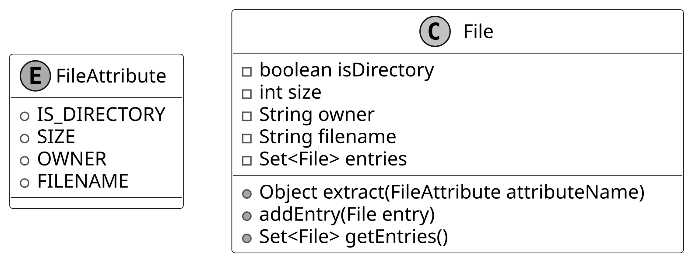
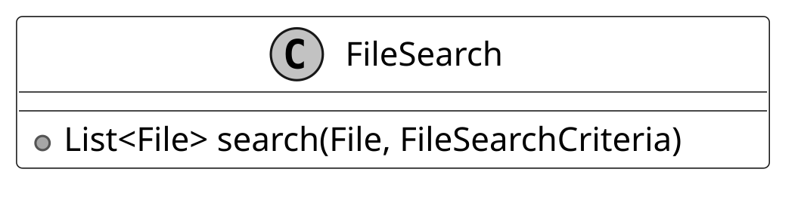
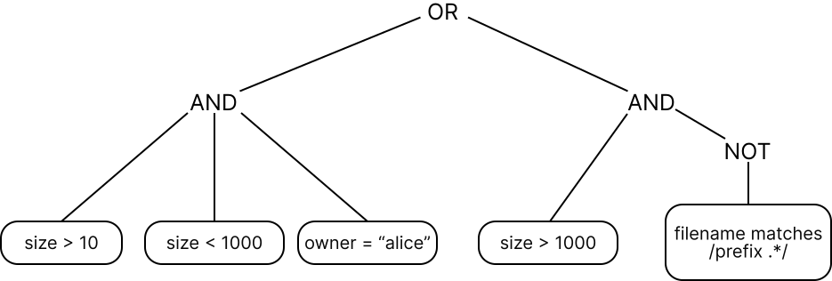

Design a Unix File Search System
In this chapter, we will explore the design of a Unix File Search system. The goal is to design classes that represent abstractions of the key entities in a file search system, such as directories, files, and filter criteria. We’ll aim to create a clear and functional structure that captures the essential interactions between these components, ensuring the search system is intuitive and scalable.
![Image represents a code snippet, likely from a build script or IDE, showing a search command. At the top are three shaded circles, possibly representing progress or status indicators. Below this, the command `$ find . -name '*.java'` is displayed. This command instructs the `find` utility to search the current directory (`.`) for all files ending with `.java`. The subsequent lines list the results of this search, indicating the location of four Java files within a directory structure: `/Movie_Ticket_Code/movie_ticket/rate/VIPRate.java`, `/Movie_Ticket_Code/movie_ticket/rate/NormalRate.java`, `/Movie_Ticket_Code/movie_ticket/rate/PremiumRate.java`, and `/Movie_Ticket_Code/movie_ticket/rate/PricingStrategy.java`. These files are likely related to movie ticket pricing, with each `.java` file potentially representing a different pricing strategy (VIP, Normal, Premium) and a PricingStrategy class managing them. The overall structure suggests a project organized using a package hierarchy within the `Movie_Ticket_Code` directory.](images/06_design-a-unix-file-search-system-img-9003fb23.png)
Let’s gather the specific requirements through a simulated interview scenario.
Requirements Gathering
Here is an example of a typical prompt an interviewer might give:
“Imagine you’re a developer trying to find specific files on a Unix system, like files owned by a user, or text files matching a pattern, buried deep in a directory structure. You run a search command, specify your criteria, and the system returns matching files quickly. Behind the scenes, it’s recursively traversing directories, evaluating file attributes, and applying your filters efficiently. Let’s design a Unix File Search system that handles this process.”
Requirements clarification
Here is an example of how a conversation between a candidate and an interviewer might unfold:
Candidate: What attributes does the find command use to search for files?
Interviewer: It could be based on criteria like size, file type, filename, and owner.
Candidate: Does it need to handle directories?
Interviewer: Yes, directories are considered as files too, with a distinct file type.
Candidate: What types of comparisons does the command support?
Interviewer: That depends on the type of attribute. For strings, we support ‘equals’ and ‘regex match’. For numbers, we support ‘greater than’, ‘equals’, and ‘less than’.
Candidate: Can we combine multiple criteria, even on the same attribute?
Interviewer: Yes, with multiple criteria, using ‘and’, ‘or’, and ‘not’ conditions.
Candidate: I assume we’re designing a system to search a directory and its sub-directories, returning files that match the given conditions.
Interviewer: Yes, that's a fair assumption.
Constructing concrete examples
With the requirements for our Unix File Search system in hand, let’s see them in action through some real-world command-line searches. These examples will show what the system needs to handle and set the stage for designing our classes:
- Start with a Simple Search: Find files recursively within / where size > 10.
- Scale Up to a Complex Search: Find files recursively within / where ((size > 10 and size < 1000 and owner = "alice") or (size > 1000 and !(filename matches /prefix.*/))).
Requirements
Based on the questions and answers, the following functional requirements can be identified:
- The search system can search for files based on attributes such as size, type, filename, and owner.
- The search system supports comparison types depending on the attribute: ‘equals’ and ‘regex match’ for strings, and ‘greater than’, ‘equals’, and ‘less than’ for numbers.
- The system can combine multiple search criteria using logical operators (and, or, not).
- The file search system can perform recursive searches within directories.
- The search system can apply search criteria to directories as well as files.
Below are the non-functional requirements:
- Scalability: Efficiently handle large directory trees with thousands or millions of files using resource-efficient traversal strategies.
- Extensibility: Support adding new attributes (e.g., modification time) and comparison operators without altering core traversal or filtering logic.
- Separation of concerns: Keep traversal logic separate from filtering logic for a modular and maintainable design.
With these requirements established, let’s move on to identifying the core objects that will bring this system to life.
Identify Core Objects
Now that we’ve seen how Unix file searches work, it’s time to design a system that can handle them. Let’s break it down into core objects, each with a clear role, to create a file search system that’s both modular and easy to maintain. Here’s what we’ll need:
- FileSearch: The central entity managing the search process, serving as the entry point into our application logic. It recursively traverses the filesystem from a starting File (directory) and returns matches based on a FileSearchCriteria object.
- File: Models a file or directory in the filesystem, storing attributes like size, type, filename, and owner. It supports a hierarchical structure with entries for subdirectories or files.

Design choice: The File object represents files and directories as a single entity. This enables FileSearch to perform consistent traversal and evaluation. This design aligns with the Unix principle that treats everything as a file for uniform handling.
- FileSearchCriteria: Encapsulates a search condition and determines whether a given File matches it by delegating to a Predicate. This wrapper class decouples the search execution logic (FileSearch) from the condition evaluation logic (Predicate), promoting separation of concerns and greater flexibility.
- Predicate: An interface defining the contract for evaluating whether a File matches a condition, enabling both simple checks (e.g., "size > 10") and composite conditions (e.g., AND, OR, NOT). We separate Predicate from FileSearchCriteria to isolate comparisons and logical combinations from how FileSearch uses the criteria. This keeps FileSearchCriteria a lightweight wrapper, while Predicate manages the complex logic.
- SimplePredicate: Implements Predicate to compare one file attribute (e.g., "size > 10") against a value with an operator (e.g., equals, greater than).
- CompositePredicate: Extends Predicate for combining conditions (e.g., AND, OR, NOT) with implementations like AndPredicate, OrPredicate, and NotPredicate. It supports complex queries, such as "size > 10 AND owner = 'bob'".
- ComparisonOperator: An interface defining how attribute values are compared, with implementations like EqualsOperator, RegexMatchOperator, GreaterThanOperator, and LessThanOperator.
Alternative approach: We could merge FileSearchCriteria and Predicate into a single class, embedding the matching logic directly in FileSearch. This simplifies the design by removing one layer but reduces modularity, as the search logic would be tightly coupled to condition evaluation, making it harder to swap criteria. For instance, switching the condition from "size > 10" to "owner = 'bob'" would require updating FileSearch.
Design Class Diagram
We’ve mapped out the core objects, such as File and FileSearch, for our Unix File Search system. Now, let’s define their classes, pinning down their roles and methods to keep everything clear and modular.
File
To model a filesystem for searching, we need a way to represent files and directories. Rather than relying on a standard library like Java’s java.io.File, we define a custom File class as the core entity, capturing key attributes and supporting hierarchical traversal. It’s paired with a FileAttribute enum for attributes used in search conditions.
Below is the representation of this class and the enum.

` named `entries`, suggesting it can contain other `File` objects. The `File` class also includes three public methods: `extract(FileAttribute attributeName)`, which returns an object based on the provided `FileAttribute`; `addEntry(File entry)`, which adds a `File` object to the `entries` set; and `getEntries()`, which returns the entire `entries` set as a `SetDesign choice: We define FileAttribute as an enum to provide a fixed, type-safe set of attributes (e.g., size, owner) for search conditions. This ensures that only valid, predefined attributes are used when evaluating files, preventing runtime errors from invalid attribute names. It also supports scalability: adding a new attribute, such as modification time, requires simply extending the enum, keeping the system extensible without altering existing logic.
FileSearch
The FileSearch class is responsible for traversing the file system from a given File, using a FileSearchCriteria object to select matching files and return them. By separating traversal from filtering logic, the design remains modular, maintainable, and easy to extend. The UML diagram below illustrates this structure.

`, implying it returns a list of `File` objects that match the provided search criteria. There are no other attributes or methods shown for the `FileSearch` class in this diagram. The overall structure is simple and clearly shows the class's name, a single method signature, and its return type, providing a concise representation of the class's functionality."/>FileSearchCriteria
The FileSearchCriteria class decides which files match our search by connecting FileSearch to Predicate. It tells FileSearch what qualifies as a match, using Predicate to check each File against the conditions.
Here is the representation of this class.
![Image represents a class diagram depicting the `FileSearchCriteria` class. The diagram is a rectangular box with three internal horizontal sections. The top section displays a large 'C' inside a gray circle, indicating a class, followed by the class name 'FileSearchCriteria'. The second section shows a private member variable declared as `Predicate predicate`, suggesting a `Predicate` object is stored within the class. The third section shows a public method `boolean isMatch(File)`, indicating a method that takes a `File` object as input and returns a boolean value, presumably true if the file matches the search criteria and false otherwise. No connections or information flow to or from the class are depicted in this diagram; it solely describes the internal structure of the `FileSearchCriteria` class.](images/06_design-a-unix-file-search-system-img-f9c85938.svg)
Design choice: We designed FileSearchCriteria to work alongside Predicate, allowing it to evaluate whether a file meets the search conditions without handling all the logic itself. This keeps responsibilities clean and modular. For example, FileSearchCriteria delegates to a Predicate to check if a file’s size is greater than 10 or if the owner is “bob.” This delegation enables flexibility. We can change or combine filtering logic (like checking different attributes or using complex conditions) without modifying either FileSearch or FileSearchCriteria. By decoupling the search traversal from condition evaluation, we preserve the separation of concerns and make the system easier to extend and maintain.
Predicate and SimplePredicate
A key part of our design is the ability to define conditions that determine whether a file should be included in the search results. These conditions can range from simple to complex. For example, we might want files whose names follow a regular expression like report.*, or files with sizes exceeding 10 bytes. To manage this, we introduce the Predicate interface as the foundation for evaluating files. It defines a single method that takes a File object and returns a boolean: true if the file satisfies the condition, false otherwise.
For straightforward conditions, we implement the SimplePredicate class. This concrete class evaluates a single file attribute, such as size or owner, against a specified value using a comparison operator (like greater than or equal). For instance, it can check "is the size bigger than 10?" or "is the owner 'bob'?" by leveraging the FileAttribute enum and a ComparisonOperator instance. The UML diagram below illustrates how these pieces fit together.
![Image represents a UML class diagram illustrating an inheritance relationship. The diagram shows an interface named `Predicate` at the top, defined by a single method: `boolean isMatch(File)`. Below this, connected by a dashed line indicating implementation, is a class named `SimplePredicate`. `SimplePredicate` implements the `isMatch(File)` method from the `Predicate` interface. Internally, `SimplePredicate` contains three private member variables: `FileAttribute attributeName`, `ComparisonOperator operator`, and `String expectedValue`. These variables likely store the file attribute to check, the comparison operator (e.g., equals, greater than), and the expected value for the comparison, respectively. The `isMatch(File)` method in `SimplePredicate` presumably uses these internal variables to perform the file attribute comparison. The `I` and `C` symbols preceding `Predicate` and `SimplePredicate` respectively denote that `Predicate` is an interface and `SimplePredicate` is a class.](images/06_design-a-unix-file-search-system-img-533be521.svg)
ComparisonOperator
The ComparisonOperator interface defines a contract for comparing a file’s attribute value (like size or name) to an expected value, answering questions like "is the size greater than 10?" or "does the filename match the pattern log.*?" It declares a method that takes two values (the attribute’s actual value and the target value), and returns a boolean indicating whether the comparison holds. We implement this interface with concrete classes, such as:
- EqualsOperator confirms if two attribute values are the same, like "is the owner 'bob'?"
- GreaterThanOperator verifies if one attribute value is larger, like "is the size over 10?"
- LessThanOperator ensures one attribute value is smaller, like "is the size under 5?"
- RegexMatchOperator evaluates whether a string attribute value satisfies a regular expression pattern, such as checking if the filename matches log.* (e.g., log.txt or logger would return true).
This interface-based design allows SimplePredicate to delegate comparisons to specialized classes like EqualsOperator or RegexMatchOperator, each optimized for its operation, enabling precise and efficient file filtering in FileSearchCriteria.
The UML diagram below shows how this structure comes together.
![Image represents a class diagram illustrating an inheritance hierarchy in object-oriented programming. At the top is an interface named `ComparisonOperator`, denoted by the 'I' in a circle. This interface declares a single method, `boolean isMatch(Object, Object)`, which takes two objects as input and returns a boolean value indicating whether they match according to a specific comparison logic. Below the interface, four classes—`EqualsOperator`, `GreaterThanOperator`, `LessThanOperator`, and `RegexMatchOperator`—are shown, each represented by a 'C' in a circle. Dashed lines with arrowheads point from the `ComparisonOperator` interface to each of these classes, indicating that these classes implement the `ComparisonOperator` interface, thereby providing concrete implementations for the `isMatch` method. Each implementation would define its own comparison logic (e.g., equality check, greater-than comparison, less-than comparison, or regular expression matching). The diagram shows a clear relationship where the classes inherit the functionality defined in the interface, providing different ways to compare two objects.](images/06_design-a-unix-file-search-system-img-43c1a8e4.svg)
Alternative approaches: We could represent operations with strings such as "equals" or ">". This simplifies initial implementation but shifts validation to runtime. Each string must be parsed and mapped to a comparison function, which increases execution time and risks runtime exceptions if an invalid operator (e.g., "equals") is left unchecked.
Another option is to use enums like EQUALS or GREATER_THAN to represent comparison operations. This makes the code safer and faster because the operations are checked at compile time, not at runtime. However, if you want to add a new operation, like case-insensitive equality for owner names, you would need to change the enum itself. In contrast, with the interface-based approach, you can just create a new class for the new operation without touching existing code.
Composite Predicate
With SimplePredicate and its ComparisonOperator implementations in place, we can already test files against single conditions like size > 10 or owner = 'alice'. But real-world searches often demand more, combining multiple conditions with logical operators. To tackle this, we use the Composite design pattern, enabling us to build complex predicates from simpler ones.
Note: To learn more about the Composite Pattern and its common use cases, refer to the Further Reading section at the end of this chapter.
Consider a search like this:
Find files where ((size > 10 and size < 1000 and owner = "alice") or (size > 1000 and !(filename matches /prefix.*/))).
If we label each simple condition:
- A for "size > 10"
- B for "size < 1000"
- C for "owner = 'alice'"
- D for "size > 1000"
- "filename matches 'prefix.*'"
- It becomes: ((A and B and C) or (D and !(E)))
This structure uses "and," "or," and "not" operators, with brackets indicating the order of nested evaluations. This tree-like hierarchy needs a systematic way to evaluate files.

10,' 'size < 1000,' and 'owner = \'alice\'.' The right subtree also contains an 'AND' node, requiring both its children to be true. One child is the condition 'size > 1000.' The other child is a 'NOT' node, which negates its child condition. This child condition, in a rounded rectangle, is 'filename matches /prefix.*/,' a regular expression indicating that the filename should *not* match the pattern 'prefix.*'. Therefore, the entire query is satisfied if either (size > 10 AND size < 1000 AND owner = 'alice') OR (size > 1000 AND NOT (filename matches /prefix.*/)) is true."/>To handle this, we define the CompositePredicate interface, extending Predicate, with concrete implementations: AndPredicate, OrPredicate, and NotPredicate. These classes compose multiple predicates into a single unit, evaluated recursively:
- AndPredicate takes a list of predicates (e.g., A, B, C) and returns true only if all succeed for a given file.
- OrPredicate takes a list (e.g., the AndPredicate result and another group) and returns true if at least one succeeds.
- NotPredicate wraps a single predicate (e.g., E) and inverts its result.
In our example:
- AndPredicate combines "size > 10", "size < 1000", and "owner = 'alice'" into one check.
- Another AndPredicate pairs "size > 1000" with a NotPredicate that negates "filename matches 'prefix.*'".
- OrPredicate links these two groups, returning true if either holds.
This structure, rooted in CompositePredicate, delivers a boolean result to FileSearchCriteria efficiently by distributing evaluation across the tree, avoiding redundant checks.
The UML diagram below illustrates this recursive composition.
![Image represents a class diagram illustrating a composite pattern for predicates. At the top is an interface `Predicate` with a single method `boolean isMatch(File)`. This interface is implemented by `SimplePredicate`, which has attributes `FileAttribute attributeName`, `ComparisonOperator operator`, and `String expectedValue`, and also implements the `isMatch(File)` method. `Predicate` is also implemented by `CompositePredicate`, an interface representing a combination of other predicates. `CompositePredicate` is further implemented by three concrete classes: `AndPredicate`, which contains a `List<Predicate> operands` and an `isMatch(File)` method; `OrPredicate`, similarly containing a `List<Predicate> operands` and an `isMatch(File)` method; and `NotPredicate`, which has a `Predicate operand` and an `isMatch(File)` method. Dashed lines indicate implementation relationships, showing how the concrete classes implement the interfaces. Solid lines show inheritance relationships. The diagram shows how simple predicates can be combined using composite predicates to create more complex filtering logic.](images/06_design-a-unix-file-search-system-img-0418c45e.svg)
With all classes defined, let’s review how they fit together in the complete class diagram.
Complete Class Diagram
Having built our classes, from the hierarchical File structure to the intricate predicate logic, we’re ready to see the complete system in a UML class diagram below. The detailed methods and attributes are skipped to make the diagram more readable.
![Image represents a class diagram illustrating a file search system. The `FileSearch` class, containing a `search` method that takes a `File` and `FileSearchCriteria` as input and returns a list of `File` objects, is at the top. `FileSearch` uses `FileSearchCriteria` to evaluate the search and `traverses` a collection of `File` objects. `FileSearchCriteria` uses a `Predicate` to determine if a file matches the criteria. `Predicate` is an interface with an `isMatch` method. This interface is implemented by `SimplePredicate`, `AndPredicate`, `OrPredicate`, and `NotPredicate`, forming a composite pattern. `SimplePredicate` uses a `ComparisonOperator` and `FileAttribute` to perform simple comparisons (e.g., file size > 10KB). `FileAttribute` is an enumeration representing file properties (IS_DIRECTORY, SIZE, OWNER, FILENAME). `CompositePredicate` classes combine simpler predicates using logical AND, OR, and NOT operations. The `File` class has methods to extract `FileAttribute` values, add entries, and retrieve all entries as a set. Dashed lines indicate inheritance or implementation relationships, while solid lines with filled diamonds represent composition. The `0..*` notation indicates a one-to-many relationship between `File` and `FileSearchCriteria`.](images/06_design-a-unix-file-search-system-img-769c98f9.svg)
Code - Unix File Search
Now that the design is in place, we can move on to implementing the core components: defining files and their attributes, applying conditions to evaluate matches, and performing the actual file search across the directory structure.
File
The File class models both files and directories in our search system, encapsulating attributes such as size, name, owner, and a boolean flag indicating directory status. It maintains a hierarchical structure through a set of child File objects, which represent the contents of subdirectories. Built for immutability, it offers no setters. Attributes are set at construction and remain unchanged, ensuring data consistency throughout the search process.
Tied to this, the FileAttribute enum defines the searchable properties, such as SIZE or OWNER, enabling SimplePredicate to extract the correct value (e.g., size for a "size > 10" condition) during evaluation.
Below is the code implementation:
// Represents a file or directory in the file system
// Contains basic file attributes and supports hierarchical structure
public class File {
private final boolean isDirectory;
private final int size;
private final String owner;
private final String filename;
// Set of directory entries (files and subdirectories)
private final Set entries = new HashSet<>();
// Creates a new file with the specified attributes
public File(
final boolean isDirectory,
final int size,
final String owner,
final String filename) {
this.isDirectory = isDirectory;
this.size = size;
this.owner = owner;
this.filename = filename;
}
// Extracts the value of a specified file attribute
public Object extract(final FileAttribute attributeName) {
switch (attributeName) {
case SIZE -> {
return size;
}
case OWNER -> {
return owner;
}
case IS_DIRECTORY -> {
return isDirectory;
}
case FILENAME -> {
return filename;
}
}
throw new IllegalArgumentException("invalid filter criteria type");
}
// Adds a file or directory entry to this directory
public void addEntry(final File entry) {
entries.add(entry);
}
// getter methods omitted for brevity
}
// Represents the different attributes that can be checked for a file
public enum FileAttribute {
IS_DIRECTORY,
SIZE,
OWNER,
FILENAME
}
- The extract method retrieves a specific attribute’s value by mapping a FileAttribute enum constant (like SIZE or OWNER) to its corresponding field. This provides SimplePredicate with the value needed to evaluate a condition, such as size for "size > 10".
- Complementing this, the addEntry method builds the directory hierarchy by adding a File instance to the entries set, enabling the recursive structure essential for file system traversal.
Predicate
The Predicate interface defines the contract for evaluating whether a File satisfies a search condition, serving as the cornerstone of our system’s filtering logic. It declares a single method, isMatch, which accepts a File instance and returns a boolean: true if the file meets the condition, false otherwise. Here’s its implementation:
// Base interface for all file search predicates
public interface Predicate {
// Checks if the given file matches the search condition
boolean isMatch(final File inputFile);
}
This method powers FileSearchCriteria by providing the yes-or-no decision needed to filter files during traversal. Its abstract nature ensures flexibility, supporting everything from simple checks like "size > 10" to complex combinations, laying the groundwork for both SimplePredicate and CompositePredicate implementations.
ComparisonOperator
The ComparisonOperator interface specifies a contract for comparing a file’s attribute value to an expected value, enabling precise condition checks, such as "is the size greater than 10?" or "does the filename match log.*?". It defines an isMatch method that takes two parameters (the attribute’s actual value and the target value) and returns a boolean indicating if the comparison holds.
We use generics (
Below is the implementation of this interface:
// Base interface for all comparison operations in the file search system
public interface ComparisonOperator {
boolean isMatch(final T attributeValue, final T expectedValue);
}
Concrete implementations, such as EqualsOperator, GreaterThanOperator, LessThanOperator, and RegexMatchOperator, encapsulate the logic for equality, ordering, and pattern matching, each tailored to its respective type. These are shown below.
// Implements exact equality comparison between values
public class EqualsOperator implements ComparisonOperator {
@Override
public boolean isMatch(final T attributeValue, final T expectedValue) {
return Objects.equals(attributeValue, expectedValue);
}
}
// Implements greater than comparison for numeric values
class GreaterThanOperatorextends Number> implements ComparisonOperator {
@Override
public boolean isMatch(final T attributeValue, final T expectedValue) {
return Double.compare(attributeValue.doubleValue(), expectedValue.doubleValue()) > 0;
}
}
// Implements less than comparison for numeric values
class LessThanOperatorextends Number> implements ComparisonOperator {
@Override
public boolean isMatch(final T attributeValue, final T expectedValue) {
return Double.compare(attributeValue.doubleValue(), expectedValue.doubleValue()) < 0;
}
}
// Implements regular expression pattern matching for string values
public class RegexMatchOperatorextends String> implements ComparisonOperator {
@Override
public boolean isMatch(final T attributeValue, final T expectedValue) {
final Pattern p = Pattern.compile(expectedValue);
return p.matcher(attributeValue).matches();
}
}
The isMatch method takes an actual value (from a File attribute) and an expected value (set in SimplePredicate), and returns true if they satisfy the operator’s rule.
Implementation choice: We leverage generics (
SimplePredicate
The SimplePredicate class implements the Predicate interface to test a File against a single condition, such as whether its size exceeds 10 or its owner is "bob". Designed with generics (
Here’s how it’s structured:
// A basic predicate that compares a file attribute with an expected value
public class SimplePredicate implements Predicate {
// The name of the file attribute to check
private final FileAttribute attributeName;
// The operator to use for comparison (equals, contains, greater than, etc.)
private final ComparisonOperator operator;
// The expected value to compare against
T expectedValue;
// Creates a new simple predicate with the specified attribute, operator, and
// expected value
public SimplePredicate(
final FileAttribute attributeName,
final ComparisonOperator operator,
final T expectedValue) {
this.attributeName = attributeName;
this.operator = operator;
this.expectedValue = expectedValue;
}
@Override
public boolean isMatch(final File inputFile) {
// Extract the actual value of the attribute from the file
Object actualValue = inputFile.extract(attributeName);
// Check if the actual value is of the correct type
if (expectedValue.getClass().isInstance(actualValue)) {
// Perform the comparison using the specified operator
return operator.isMatch((T) actualValue, expectedValue);
} else {
return false;
}
}
}
This implementation of SimplePredicate ensures type safety and modularity, allowing FileSearchCriteria to apply precise, single-attribute filters across the filesystem traversal.
CompositePredicate
The CompositePredicate interface extends Predicate to combine multiple predicates into complex conditions, such as "size > 10 and owner = 'bob'". We follow the Composite design pattern, which organizes predicates into a tree where simple ones (like SimplePredicate) act as leaves and combinations (like AndPredicate) act as nodes, all sharing the Predicate interface. This lets us evaluate them recursively, treating single and combined conditions the same way.
Here’s the code:
public interface CompositePredicate extends Predicate {
// This interface is intentionally empty as it serves as a marker
// to identify predicates that combine multiple other predicates (AND, OR, NOT)
}
// Implements logical AND operation between multiple predicates
public class AndPredicate implements CompositePredicate {
// List of predicates that must all match for this predicate to match
private final List operands;
// Creates a new AND predicate with the specified predicates
public AndPredicate(final List operands) {
this.operands = operands;
}
// Checks if the given file matches ALL predicates
@Override
public boolean isMatch(final File inputFile) {
return operands.stream().allMatch(predicate -> predicate.isMatch(inputFile));
}
}
// Implements logical OR operation between multiple predicates
public class OrPredicate implements CompositePredicate {
// List of predicates, at least one of which must match
private final List operands;
// Creates a new OR predicate with the specified predicates
public OrPredicate(final List operands) {
this.operands = operands;
}
@Override
public boolean isMatch(final File inputFile) {
return operands.stream().anyMatch(predicate -> predicate.isMatch(inputFile));
}
}
// Implements logical NOT operation on a predicate
public class NotPredicate implements CompositePredicate {
// The predicate to negate
private final Predicate operand;
// Creates a new NOT predicate with the specified predicate to negate
public NotPredicate(final Predicate operand) {
this.operand = operand;
}
@Override
public boolean isMatch(final File inputFile) {
return !operand.isMatch(inputFile);
}
}
- AndPredicate checks if all conditions pass (e.g., "size > 10 and owner = 'bob'").
- OrPredicate checks if any condition passes (e.g., "size > 10 or owner = 'bob'").
- NotPredicate takes a single predicate and flips its isMatch result (e.g., "filename not ending with '.txt'").
- AndPredicate and OrPredicate use List
to support any number of conditions. - NotPredicate takes just one condition.
- Combined Impact: Enables FileSearchCriteria to process nested logical conditions efficiently.
FileSearchCriteria
The FileSearchCriteria class acts as a bridge between FileSearch and the predicate-based conditions that determine which files match, delegating the evaluation to a Predicate, whether a SimplePredicate or CompositePredicate. Here’s its implementation:
// Wrapper class that encapsulates a search condition for file matching
public class FileSearchCriteria {
// The predicate that defines what makes a file match
private final Predicate predicate;
// Constructor that takes a predicate defining the criteria
public FileSearchCriteria(final Predicate predicate) {
this.predicate = predicate;
}
// Checks if the given file matches the search criteria
public boolean isMatch(final File inputFile) {
return predicate.isMatch(inputFile);
}
}
This design centers on the isMatch method, which invokes the Predicate’s logic to assess a File and returns true for matches, such as "size > 10" with SimplePredicate or "size > 10 and owner = 'bob'" with CompositePredicate.
Implementation choice: We chose to wrap the Predicate in FileSearchCriteria to keep FileSearch focused solely on filesystem traversal and isolate condition evaluation to a separate, reusable layer.
Alternate implementation: Instead of using FileSearchCriteria, FileSearch could directly invoke the Predicate's logic to evaluate files. However, this would tightly couple traversal and filtering logic, making it harder to modify or extend conditions independently.
FileSearch
The FileSearch class orchestrates the search across the filesystem, starting from a root File and leveraging FileSearchCriteria to identify matching files through recursive traversal. It employs a stack-based approach to explore directories efficiently. Here’s the implementation:
// Main class responsible for performing file system searches
public class FileSearch {
// Performs a recursive search through the file system starting from root
// Returns a list of files that match the given criteria
public List search(final File root, final FileSearchCriteria criteria) {
// List to store matching files
final List result = new ArrayList<>();
// Stack to handle recursive traversal without actual recursion
final ArrayDeque recursionStack = new ArrayDeque<>();
// Start with the root directory
recursionStack.add(root);
// Continue until we've processed all files
while (!recursionStack.isEmpty()) {
// Get the next file to process
File next = recursionStack.pop();
// Check if the file matches our criteria
if (criteria.isMatch(next)) {
result.add(next);
}
// Add all directory entries to the stack for processing
for (File entry : next.getEntries()) {
recursionStack.push(entry);
}
}
return result;
}
}
This search method begins by initializing a result list and an ArrayDeque stack with the root File. It then processes each file by popping it from the stack, evaluating it with the criteria.isMatch, and adding matches to the result. For directories, it pushes all entries onto the stack, ensuring every file is visited in a depth-first manner. The returned List
Implementation choice: We opted for a stack over recursive calls to prevent stack overflow in deep filesystems, balancing efficiency with robustness. Alternatively, a recursive method could work for smaller structures, but it risks failure on large or deeply nested directories.
Deep Dive Topic
Now that the basic design is complete, the interviewer might ask you some deep dive questions. Let’s check out some of these.
File search test
After implementing our classes, it’s a good idea to verify the end-to-end logic. The UNIX file search problem is abstract, so we create a test case to demonstrate how it works.
Here’s a test case for the condition "non-directories owned by 'ge.*'":
public class FileSearchTest {
@Test
public void testFileSearch() {
// Create a root directory and two files with different owners
final File root = new File(true, 0, "adam", "root");
final File a = new File(false, 2000, "adam", "a");
final File b = new File(false, 3000, "george", "b");
// Add files to the root directory
root.addEntry(a);
root.addEntry(b);
// Search criteria: Find non-directory files owned by users matching "ge.*"
final FileSearchCriteria criteria =
new FileSearchCriteria(
new AndPredicate(
List.of(
new SimplePredicate<>(
FileAttribute.IS_DIRECTORY,
new EqualsOperator<>(),
false),
new SimplePredicate<>(
FileAttribute.OWNER,
new RegexMatchOperator<>(),
"ge.*"))));
// Execute the search and get results
final FileSearch fileSearch = new FileSearch();
final List result = fileSearch.search(root, criteria);
// Verify that only one file matches the criteria
assertEquals(1, result.size());
// Verify that the matching file is "b"
assertEquals("b", result.get(0).getFilename());
}
}
Wrap Up
With the UNIX file search system fully implemented and tested, it’s time to step back and consider what we’ve achieved. This chapter began by gathering requirements through a structured dialogue, then progressed to defining core objects, crafting their class structure, and coding the essential components.
The system's maintainability and extensibility are ensured by the clear division of responsibilities among the classes: File, FileSearch, FileSearchCriteria, and Predicate, which respectively represent files, traverse directories, evaluate conditions, and define match logic. Our choices, such as separating FileSearch from FileSearchCriteria and using generics in ComparisonOperator, improve scalability and maintain type safety throughout processes. We could have merged FileSearchCriteria with Predicate into one class for a tighter initial design, but this would blur their distinct roles, making it harder to update or swap condition logic without affecting traversal.
Congratulations on getting this far! Now give yourself a pat on the back. Good job!
Further Reading: Composite Design Pattern
This section gives a quick overview of the design patterns used in this chapter. It’s helpful if you’re new to these patterns or need a refresher to better understand the design choices.
Composite design pattern
Composite is a structural pattern that lets you organize objects into tree structures and then handle these structures as if they were individual objects.
Problem
Imagine you have two types of objects: Files and Folders. A Folder can contain several Files as well as many smaller Folders and so on. Say you decide to create a search system that uses these classes. Searches could involve simple Files on their own, as well as Folders packed with Files, and other Folders. How would you find all items matching a specific condition, like "size > 10," across this structure?
Solution
The Composite pattern suggests that we work with Files and Folders through a common interface that declares a method for checking conditions.
Here’s how this method works:
- For a File: It checks if the File matches the condition, like "size > 10," and gives a yes or no answer.
- For a Folder:
- It examines each item within, testing whether it meets the condition.
- It recursively applies this process to any nested folders, traversing the entire tree until all items are evaluated.
- It can also enforce its constraint, such as "not a directory," to refine the result.
Here’s a simple diagram showing the Composite pattern for Files and Folders:
![Image represents a class diagram illustrating an inheritance relationship and a composition relationship in object-oriented programming. At the top is an interface labeled 'I Item', represented by a rectangle with a large, shaded circle containing the letter 'I' in the upper left corner. Two classes, 'C File' and 'C Folder', are positioned below, each represented by a rectangle with a large, shaded circle containing the letter 'C' in the upper left corner. Dashed lines with open arrowheads connect 'I Item' to both 'C File' and 'C Folder', indicating that both 'File' and 'Folder' implement the 'Item' interface. A solid line with a filled diamond at the 'Folder' end connects 'I Item' to 'C Folder', labeled 'many', signifying that one 'Item' can contain many 'Folder' instances, representing a composition relationship where 'Folder' objects are part of the 'Item' object's structure. The diagram shows that both 'File' and 'Folder' are types of 'Item', and that 'Item' can contain multiple 'Folder' instances.](images/06_design-a-unix-file-search-system-img-43b03237.svg)
Item is the common interface that both File and Folder use. The advantage is that we can treat all objects, File or nested Folder, the same through the common interface, letting them pass the check down the tree without knowing their types.
When to use
The Composite design pattern is useful in scenarios where:
- You need to build a tree-like object structure.
- When you want the client code to handle both simple and complex elements uniformly.